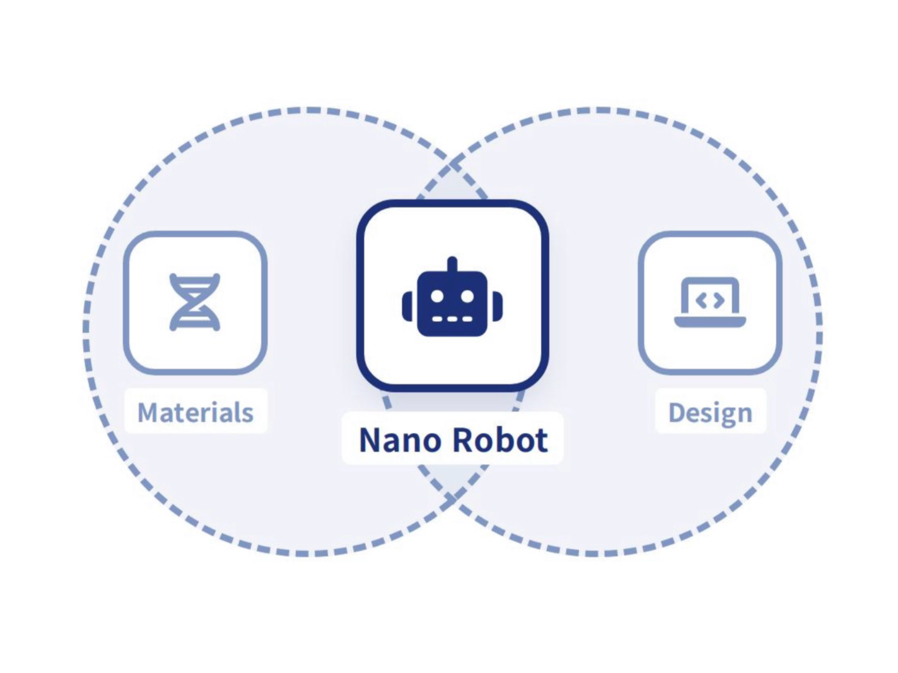

WHAT IS BIOMOD?
BIOMODとは？
BIOMOD（Bio-Molecular Design Competition）は、大学の学部生を対象とした、生体分子ナノテクノロジーの国際ロボットコンテストです。
2011年にハーバード大学のWyss研究所によって創設され、世界中から未来の科学者・エンジニアを目指す学生チームが集まり、そのアイデアと技術力を競い合います。
何を創る大会なのか？
学生たちは、DNA、RNA、タンパク質といった「生き物の体を作っている微小な材料」を意図した通りに設計・制御し、ナノサイズのロボットや分子システムを創り出します。
例えば、「がん細胞だけを見つけて薬を届けるカプセル」や「特定の成分に反応して動くナノモーター」など、医療や環境、材料工学の未来を変えるアイデアを形にします。

審査の仕組み
大会での評価は、実験データの正確さだけでなく、以下の3つの総合力（100点満点）で審査されます。
-
・
ウェブサイト（Wiki）の制作：50点
研究内容を世界に向けて分かりやすく解説するサイトの構築 -
・
紹介動画の制作：25点
プロジェクトの魅力を伝える3分以内のYouTube動画 -
・
プレゼンテーション：25点
大会当日に英語で行う、10分間の研究成果の発表
総合点に応じてGold / Silver / Bronzeの各賞が、さらに部門別の賞（Best Project Website、Best YouTube Videoなど）が贈られます。
OUR PROJECTS
これまでのプロジェクト
Open Sesame!
Hybridization Chain Reaction-Driven DNA Bundling for Lipid Membrane Disruption
（HCRで組み上がるDNAバンドルによる脂質膜破壊）
病気のバイオマーカーとして期待される細胞外小胞（EV）ですが、界面活性剤などで膜を壊して中身を調べる従来の方法では、すべての小胞が一度に壊れ、「どのEVに由来する分子か」という情報が失われてしまいます。
本プロジェクトでは、複数のDNA鎖を束ねて伸長させる独自の反応「Bundled HCR」で硬いDNAバンドルを組み上げ、標的のEVの近くでだけ脂質膜を突き破る、新しい膜破壊システムを提案します。
Bow-like DNA bending method using Avidin–Biotin binding
（アビジン‐ビオチン結合を利用した弓状DNA変形法）
従来のDNAオリガミを曲げる手法は、周囲の環境変化に弱く設計が複雑になるという課題を抱えていました。そこで本プロジェクトでは、極めて強固で安定した「アビジン-ビオチン結合」を利用し、DNAを弓の弦のように引き絞って湾曲させる新しいツールを提案します。
結合部位の距離やリンカーの長さを調整することで曲げ角度を精密に制御し、あらゆる環境下で安定するDNA3D曲面構造の自在な設計を目指しています。
Nano Pill Bug
がんなどの早期発見の鍵として注目されるmiRNAですが、生体内の酵素（RNase）によって容易に分解されてしまうため、不安定なmiRNAの研究はこれまで困難でした。
本プロジェクトでは、ダンゴムシのように丸まって標的を保護する分子ロボット「Nano Pill Bug」を開発しました。DNAオリガミの曲げ応力をトラップのように利用することで、極微量のmiRNAを瞬時に捕捉・カプセル化し、酵素による分解から守り抜く新しいデバイスの形を提案します。
Micro Invader Game
（生体分子でつくるミクロなインベーダーゲーム）
体に入り込んだ異物を見つけて排除する免疫のしくみは、外から来た敵を撃ち落とす「インベーダーゲーム」とよく似ています。外からの刺激を感知して応答する、こうした生物の基本的なしくみを分子で再現できれば、人工生命やドラッグデリバリーの開発に新しい視点をもたらすと考えました。
本プロジェクトでは、インベーダーゲームを「弾」「砲台」「敵」の3つに単純化し、免疫のような分子システムをマイクロスケールでつくりました。DNAで修飾したマイクロビーズの「弾」は、動きを止める「ストッパーDNA」を外すと平面上を転がって発射され、リポソームでできた「敵」は、弾が当たると蛍光を発したり自壊したりして応答します。